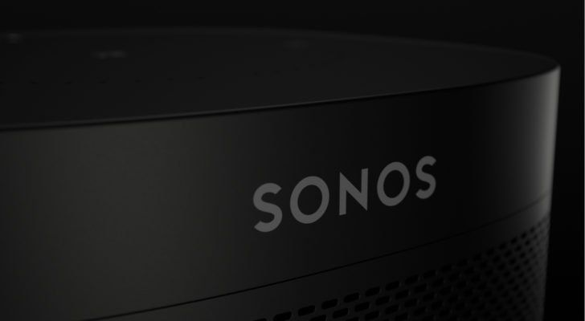

A closer look at Sonos first portable Bluetooth speaker
Steamrolling towards a massive launch
By Ayush Nayyar | @ayushnayyar | Aug 27, 8:00am IST

Photo: Sonos
We’re getting a better look at the long-awaited portable bluetooth speaker from Sonos thanks to a slew of new images posted by WinFuture. The German publication that specializes in Microsoft leaks has posted what it says are “official marketing images” of the new speaker, while also giving us a name for product S17: Sonos Move.
The images give us a first glimpse at the stationary base station as well as the built-in handle whereby the Sonos Move can be undocked and transformed into an ordinary Bluetooth speaker via a toggle button on the rear. We’re also getting a first look at how the Sonos Move charges, either via the USB-C jack or the two charging contacts near the base of the speaker. It’s a clever design that lets you extend your Sonos whole-home audio network into the backyard or a bathroom, for example, or to places far beyond the reach of your Wi-Fi signal like the beach or a park.
The images give us a first glimpse at the stationary base station as well as the built-in handle whereby the Sonos Move can be undocked and transformed into an ordinary Bluetooth speaker via a toggle button on the rear. We’re also getting a first look at how the Sonos Move charges, either via the USB-C jack or the two charging contacts near the base of the speaker. It’s a clever design that lets you extend your Sonos whole-home audio network into the backyard or a bathroom, for example, or to places far beyond the reach of your Wi-Fi signal like the beach or a park.
- The speaker is larger than it may look in the photos. It’s both taller and slightly wider than the Sonos One / Play:1.
- It supports hands-free voice commands from either Amazon Alexa or Google Assistant.
- When in Bluetooth mode, the speaker cannot be controlled with the Sonos app. It behaves like any other Bluetooth speaker. You pair it and play.
- Hands-free voice commands for Alexa and Google Assistant are also (currently) unavailable in Bluetooth mode.
- In regular Wi-Fi mode, the speaker appears like any other Sonos device in the app — but with a battery indicator.
- Like other recent Sonos speakers, the portable one will support Apple’s AirPlay 2.
- It’s the first Sonos speaker to support Auto Trueplay, utilizing the speaker’s built-in microphones to automatically fine tune the audio output.